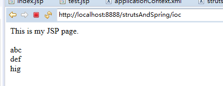
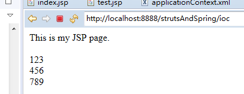

spring控制反转
大家好，我是mythSun。
很高兴能在这里和大家分享,spring控制反转。
话不多说，直接开始。
这次采用实战演示，实战测试环境用了struts+spring搭建。
测试结果：两种经过控制反转的实现类各自实现不同的效果
请耐心先把前面九步的完成，从第十步开始，形象展示控制反转。
第一步：
导入struts和spring的jar包
不知道哪些包的小伙伴，可以参考我“ssh实现简单登录功能”博文，使用ssh的jar包
第二步：
写web.xml文件
代码：
第三步：
写一个接口类，用于功能实现TestInterface.java
代码：
第四步：
写一个TestAction类，让其继承ActionSupport类，并覆盖其中的execute方法。
代码：
第五步：
写一个test.jsp，用于显示效果。写一个index.jsp用于测试
Index.jsp代码：
test.jsp代码：
第六步：
写一个实现接口类TestImpl.java
代码：
第七步：
编写applicationContext.xml文件
代码：
第八步：
编写strus.xml文件
代码：
第九步：
测试，显示如图测试成功，代表前期工作ok了，下面开始演示控制反转

第十步：
再写一个实现接口类Test2Impl.java
代码：
注意，现在同一个接口我们有了两个实现类，大家想一下，因为接口的存在，我们后期需要改代码，不需要更改太多，只需要实现一下接口，写一个新的实现类用就行。
但是呢，这样虽然方面，不可避免还是要更改多出调用这个实现类的方法。
所以就有了控制反转。通过注入的方式，也就是set方法，让我们只需要改变配置文件，就能够轻松让新的实现类进入我们的项目发挥作用，而不用修改太多。
第十一步：
修改applicationContext.xml
修改位置代码：
这样原来用到TestImpl.java的地方，自动就变成了Test2Impl.java了，不需要在变更别的地方，是不是非常方便呢。
现在，再按照之前的测试方式，会显示这样的效果。

原来的效果没有了，换成了我们新写的实现类。
如果不是控制反转，我们实现这个功能，就需要多出太多工作量，而不是现在这样只需要更改一个地方就能够完成了。
这就是控制反转的好处。
好了，到此结束，谢谢大家。